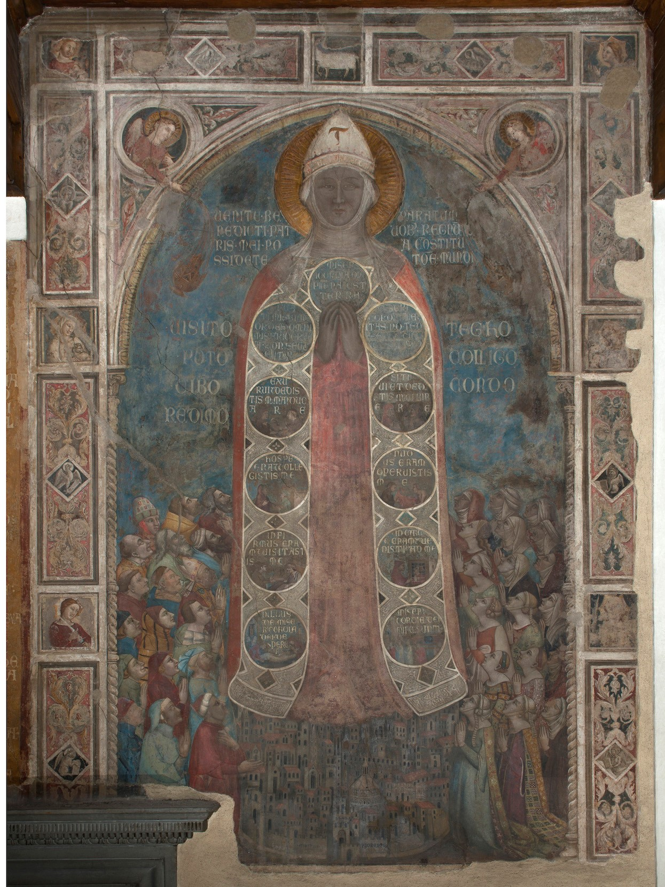

Here you will find the compendium of all our Florentine research and scholarship.
Baptism in Florence
The ritual of baptism was a crucial feature of fourteenth- and fifteenth-century Florence. This symbolic practice carried both a spiritual and social weight integral for full participation in the fabric of Florentine society. Baptism was not only a means of defense against hellfire, but an introduction to civic society and a foundational moment in each individual’s life. While some of the finer details of the practice are unclear to contemporary scholars, we now know that by 1128 the ritual was performed at the octagonal Baptistery of San Giovanni, located directly across from the cathedral.
Alberto Arnoldi:
Alberto Arnoldi
ca. 1320? – ca. 1370?
Sculptor
Andrea Pisano:
Andrea Pisano
ca. 1295 – ca. 1348
Sculptor and Architect

Bernardo Daddi: ca. 1280 – 1348
A late contemporary of the famous painter Giotto di Bondone, Bernardo Daddi (ca. 1280 – 1348) became one of Florence’s most popular and most important producers of panel pictures during the two decades that preceded the advent of Bubonic Plague. The identity of his master remains unclear, and speculations range from Giotto himself to obscure miniaturists like the elusive Master of the Dominican Effigies.
Nardo di Cione:
Nardo di Cione
died c. 1366
Painter
Niccolo di Pietro Gerini:
Niccolo Gerini
ca. 1340–1416
Painter
Built in c. 1360, the Oratory of the Misericordia, as it was then known, has endured expansions, fires, renovations, a merger, and more to become the elegant structure that stands on the Piazza del Duomo today. Read more about the structure’s tumultous history here. Explore the headquarters of one of the city’s most prominent charities, the Confraternity of the Misericordia, later merged with that of the Bigallo, and see the art that it commissioned to assert its place in Florentine society.